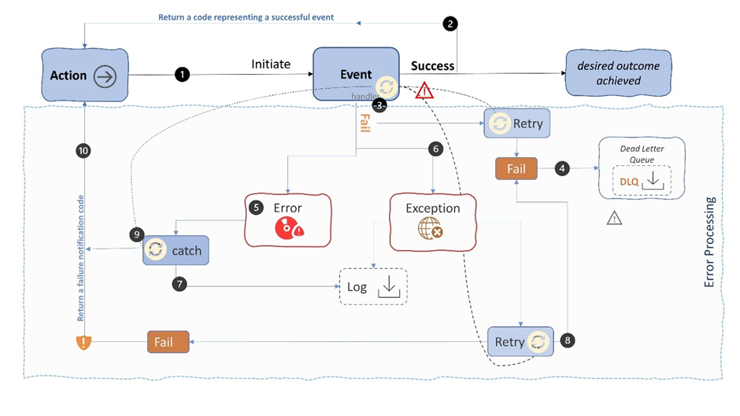
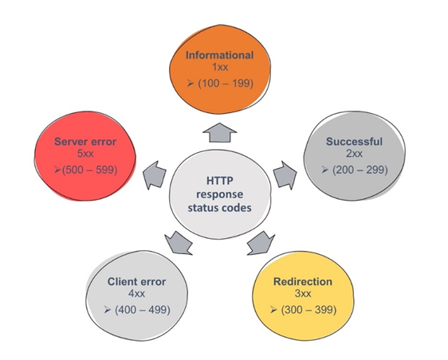
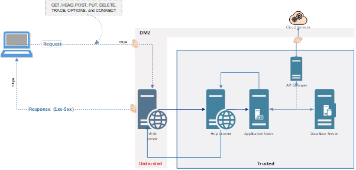

Reflecting on Error Management and listing HTTP Status Codes¶
Under normal operational conditions, interactions between two or more system will result in the exchange numerous codes which notify each system of task status e.g. a 200 return code will represents that all is well and allows the process continuation of further orchestration of a workflow to complete its task. These codes are also useful for process initiators to manage errors and respond to any errors that occur.
Error Management¶
Error Management may refer to the identification, capture, analysis, notification and resolution of problematic issues or a fault which may occur during the operation of a system or the exchange of data/messages between one or more systems.
It is important to note that Error Management is NOT Incident Management, which is a whole different topic, one for another blog.
Errors i.e. systems issues or faults can be classified as critical i.e. when a resolution cannot be applied at run-time to resolve e.g. a hardware failure, or non-critical errors which can be ‘gracefully’ resolved or worked around when they occur, an example of which is a system resource (file, folder) not available and can be resolved by branching to a alternate set of processes until the requested resource is available. Priorit at run-time should obviously be given to critical errors as these can result in system malfunctions that are visible to the end user.
A core non-functional requirement, when designing a system, is to adequately provision for potential errors and resolutions,. Solution Architects, as designers of systems, must consider numerous hypothetical problematic scenarios and explore how errors can be trapped and subsequently handled , resolved and or mitigated to ensure that the system continues to function wit minimum impact on other components.
Errors, as we know, can occur for several reasons ranging from incorrect user input, resource access rights privileges, failures complex message exchanges due to formats between systems and with the numerous scenarios how do we start planning for the worst case? well one approach is to start with a simple set of try / catch options encapsulating a catch all default which can then be expanded.
Below Is a simple depiction of a flow between an action and the desired outcome and where a event fails the elements to consider, obviously this is very generic and only there for illustrate purposes;

The basic illustration above highlights some possible flows which are discussed below;
- An action either a manual or automatic task invokes a system event e.g. a piece of executable code, invocation of API call, a script or a system to system event.
- Upon successful completion of the task the event returns a predefined ‘agreed’ code or message informing that the event that the task completed successfully.
- In the event of a non-critical failure the event handler of the event will automatically retry the operation and can be configured for multiple retries depending on the use case being performed.
- If the retry policy fails , then one option (subject to the type of scenario) would be to send the message or request data to a dead letter que (DLQ) i.e. a que set detached for future re-processing or follow on actions.
- If the task resulted in a error , one which has been provisioned for i.e. a known unknown, e.g. lack of a system resource then an error code is returned or handled by the event handler.
- If the fault is an exception, often caused by the code of the application e.g., a variable divided by zero and thus not possible to recover then this would be captured and recorded in an audit file(log file). Log files are used as a record / audit to track all events in a system and allow support staff resolve issues offline.
- Upon catching an error or exception that has occurred it would be prudent to time stamp the event when writing to the associated log file.
- In most cases one will, by default, introduce a retry policy e.g., try every n minutes for x times before failing the request. Again a predefined code will be remitted or notified to the recipient or to a central management system.
- The error policies will also define return codes that relate to specific errors and any additional information allowing management / control system or processes to handle and resolve.
- All triggered events should receive a return message or code i.e., a notification of success or failure.
The above, while very basic, highlights possible actions / flows relating to handling error events, which return a message or predefined code that notify of success or failure and thus support and diagnosis and process continuation steps.
Most interactions will follow an action, event, response pattern, where a action will trigger an event that will receive a response and by understanding which are fast becoming industry standards as are http status codes and enable the troubleshooting required when operating systems and sites.
System Solution Designs will encapsulate , at a minimum, a set of operations between a client and a web server using HTTP methods, POST, GET, PUT, PATCH, and DELETE which match to create, read, update, and delete (CRUD) operations, respectively.
HTTP status codes are three-digit numbers which, as previously mentioned, indicate the status of a client's request to a server and at a macro level they are used to indicate if the .
- Request was successful.
- Client needs to take further action and
- If an error occurred.
These 3 digit codes are clustered into 5 discrete areas of concern or class of codes, which range from 100 – 500s where the ;

- 100s: represent a set of Informational codes that highlight that a request initiated by the browser is continuing.
- 200s: are Success codes and returned when a browser request is received, understood, and processed successfully by the server.
- 300s: represent a Redirection when a new resource has been substituted for the requested resource.
- 400s: Client codes show a problem with the request at the client side.
- 500s: Server codes show a request was accepted, but an error was returned by the server which prevented the fulfilment of the request e.g. an API Gateway receives the inbound request but cannot be fulfilled by the backend system for various reasons
Within each of these ranges above, a variety of server codes exist and may be returned by the server. Each individual code has a specific and unique meaning and discussed below;
HTTP Status Codes¶
Numerous server status codes exist, and you will only encounter a few consistently hence we only discuss the common ones but please note there are many more.
100 Status Codes¶
A 100-level status code informs you that the request you’ve made to the server is still in progress. It represents additional information to let you know what’s going on.
Code | Response | Comment |
100 | Continue | This signifies that the server in question has received the browser’s request headers and is now ready for the request body to be sent as well. Making the request process more efficient since it prevents the browser from sending a body request when the headers have been rejected. |
101 | Switching protocols | Your browser has asked the server to change protocols, and the server has complied. |
102 | Processing | When a server sends the 102-status code, the client will keep the HTTP Connection alive and wait for the final HTTP response to arrive. This avoids timeout of the request |
103 | Early hints | This returns limited response headers before the rest of the server’s response is ready to send. |
200 Status Codes¶
A 200 level response means that everything is working as it should be - Happy Codes 😊
Code | Response | Comment |
200 | OK | The request succeeded where success is related to the HTTP method |
201 | Created | The server has fulfilled the browser’s request, and as a result, has created a new resource. This is typically the response sent after POST requests, or some PUT requests. |
202 | Accepted | The server has accepted the request but is still processing it. The request ultimately may or may not result in a completed response. |
203 | Non-Authoritative Information | This status code may appear when you use a proxy e.g. a API Gateway with the response code could indicate the returned metadata is not exactly the same as is available from the origin server in other words the gateway received a 200 “OK” status code from the origin server but modified the response before passing it on to your browser. |
204 | No Content | This code means that the server has successfully processed the request but is not going to return any content however the headers may be useful. |
205 | Reset Content | Informs the user agent to reset the document which sent this request. |
206 | Partial Content | Enables a browser to resume paused downloads, as well as to split a download into multiple streams. A 206 code is sent when a range header causes the server to send only part of the resource |
207 | Mixture of Responses | 207 (also the bus I used to take to school) as a Http code represents a multi-Status response i.e. mixture of responses supplying the status for multiple independent processes used by WebDAV servers |
300 Redirection Status Codes¶
There are several HTTP statuses codes that go with redirections, i.e., when a resource has moved these are.
Code | Response | Comment |
300 | Multiple Choices | The request has more than one possible response and the user should choose one of them. This may occur when there are multiple file type extensions available. |
301 | Moved Permanently | The URL of the requested resource has changed permanently. The new URL is provided in the response. |
302 | Found | The requested resource was found, however not at the location where it was expected - used for temporary URL redirection. |
303 | See Other | A 303 code tells the browser that it found the resource requested via POST, PUT, or DELETE. However, the server sent this response to direct the client to get the requested resource at another URL with a GET request. |
304 | Not Modified | This is used for caching purposes and informs the browser that the resources stored in the cache hasn’t changed. |
307 | Temporary Redirect. | The server sends this response to direct the client to get the requested resource at another URL with the same method that was used in the prior request. Note unlike the 302-status code, it does not allow the HTTP method to change |
308 | Permanent Redirect. | Indicates that the requested resource is now permanently found at a new URL. |
400 Client Error Status Codes¶
At the 400 level, HTTP status codes start to become problematic. These are error codes specifying that there’s a fault with your browser and/or request.
Code | Response | Comment |
400 | Bad Request | The server cannot or will not process the request due to a client error (e.g., malformed request syntax, invalid request message etc). |
401 | Unauthorized | This is returned by the server when the target resource lacks valid credentials, and the client must authenticate itself to get the requested response |
402 | Payment Required | This response code is reserved for future use and may be used to indicate that a request cannot be fulfilled, usually due to a lack of required funds. |
403 | Forbidden | This code is returned when a user attempts to access something they do not have permission to view. |
404 | Not found | The server cannot find the requested resource. i.e., the requested resource does not exist. |
405 | Method not allowed | The request method is known by the server but is not supported by the target resource. For example, an API Gateway may not allow calling DELETE to remove a resource. |
406 | Not acceptable response.” | This response is sent when the web server doesn't find any content that conforms to the criteria given. |
407 | Proxy Authentication Required | A proxy server requires the browser to authenticate itself before continuing. |
408 | The server timed out waiting for the rest of the request from the browser. | This code is generated when a server times out while waiting for the complete request from the browser. In other words, the server didn’t get the full request that was sent by the browser. One possible cause could be net congestion resulting in the loss of data packets between the browser and the server. |
409 | Conflict | The server couldn’t process because there’s a conflict with the relevant resource and can occur due to multiple simultaneous edits |
410 | Gone | The requested content has been permanently deleted from server, with no forwarding address. |
411 | Length Required. | The requested resource requires the client specify a certain length and it did not. |
412 | Precondition Failed | The client indicated preconditions in its headers which the server does not meet. |
413 | Payload Too Large | Your request is larger than the server is willing or able to process. |
414 | URI Too Long | The URL requested by the client is longer than the server is willing to decode. |
415 | Unsupported Media Type | The request includes a media type that the server or resource does not support. |
416 | Range Not Satisfiable. | The request is for a part of a resource that the server is unable to return. |
417 | Expectation Failed | The server is unable to meet the requirements specified in the request’s expect header field. |
418 | I’m a teapot | The server refuses the attempt to brew coffee with a teapot. It’s an April Fool’s Joke from 1998? |
422 | Un processable Entity | The client request has semantic errors, and the server can’t process it. |
425 | Too Early | Server is unwilling to process a request because it may be repeated. |
426 | Upgrade Required | Refusal to perform the request using the current protocol but might be willing to do so after the client upgrades to another protocol. |
428 | Precondition Required | The server requires conditions to be specified before processing the request. |
429 | Too many requests | User has sent too many requests in a given amount of time (rate-limiting). |
431 | Request Header Fields Too Large | The server can’t process the request because the header fields are too large. The request may be resubmitted after reducing the size of the request header fields. |
451 | Unavailable for Legal Reasons | The server prohibits access to the resource you’ve requested (or a set of resources including the one you’ve requested) that cannot legally be provided, |
500 Server Error Status Codes¶
500-level status codes are also considered errors. However, they denote that the problem is on the server’s end. This can make them more difficult to resolve.
Code | Response | Comment |
500 | Internal Server Error | The server has met a situation it does not know how to manage. This code is typically generated by third-party plugins, faulty script or a database connection issue. |
501 | Not Implemented | This error shows that the server does not support the functionality required to fulfil the request. |
502 | Bad Gateway | This error response means that the server, while working as a gateway to get a response needed to handle the request, got an invalid response. |
503 | Service Unavailable | The server is not ready to handle the request this could arise when a server is down for maintenance or simply overloaded. |
504 | Gateway Timeout | This error response is given when the server is acting as a gateway and cannot get a response in time. |
505 | HTTP Version Not Supported | The server doesn’t support the HTTP version the client used to make the request e.g. a FTP Server |
508 | Resource Limit Is Reached | limits on resources set by your web host have been reached examples could be when a servers an infinite loop while processing the request |
509 | Bandwidth Limit Exceeded | Normally is displayed when a site is receiving too much traffic than the host can allow, |
511 | Network Authentication Required | The request requires added authentication before the request can be serviced. Note: This status is not generated by origin servers, but by the intercepting proxies that control access to the network. |
Using the above we can transpose the codes onto a set of flows for a typical n-tier web system where the client sends a HTTP Method request to a web server which can orchestrate the relevant command and return one of the above codes listed to highlight the result from the method.
A Web Server (http listener) will communicate and exchange messages with downstream systems using similar methods and exploiting the codes listed above to act as a mechanism of process control via the notification responses - consider the illustration below and the exchange of messages.
